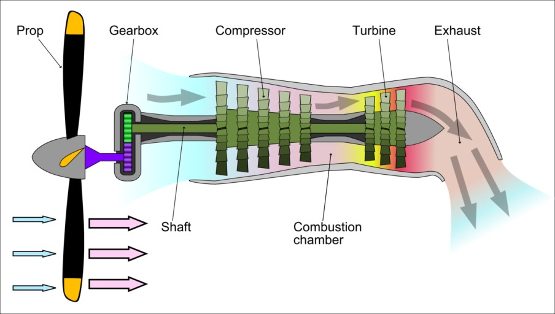

가스터빈 항목의 마지막 페이지인 터보프롭엔진이다.
우리가 흔히 알고있는 프로펠러 비행기가 될 수 있다.
터보프롭엔진은 현재엔 수송기에 많이 쓰이고있고
여기서 주의해야할 점은 왕복기관의 프로펠러와 헷갈리지 말것이다.
터보프롭엔진은터보샤프트엔진과는 다르게
축을 하나 빼오는 것이 아닌 힘이 전달되는 터빈을 축으로 하여
그 전달된 터빈으로 부터 프로펠러로 구동하게 되는것이다.
즉 터보샤프트엔진은 배기가스의 힘으로 구동하는것이라면
터보프롭엔진은 배기가스를 방출해주는 터빈의 힘으로
구동되는것으로 볼 수 있다.